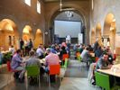
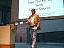
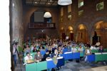
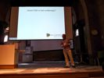
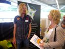
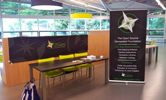
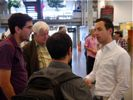
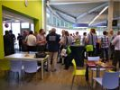

28 juni 2012 - Velp
Contact
www.osgeo.nlinfo@osgeo.nl
@osgeonl #osgeonl
|
|
OSGeo.nl Dag
28 juni 2012 - Velp |
Contactwww.osgeo.nlinfo@osgeo.nl @osgeonl #osgeonl |
|  |  |  |  |

|
 |  |  |

|
 |
|
De eerste OSGeo.nl Dag vond plaats op donderdag 28 juni 2012 in Velp. Hiernaast staat het volledige programma. Ongeveer 160 deelnemers en sprekers mochten we verwelkomen. ProgrammaZoals hiernaast te zien is werd een breed programma voor een divers publiek geboden. In de presentaties en workshops stonden praktische toepassingen centraal, waardoor niet alleen een beeld werd gegeven van de technische mogelijkheden, maar het publiek ook werd meegenomen in de wijze waarop diverse partijen open source software in hun dagelijkse praktijk toepasten. Naast gebruik van software was er in presentaties en workshops aandacht voor de wijze waarop open data (met name OpenStreetmap) gebruikt kon worden en hoe u zelf kunt helpen deze dataset verder uit te bouwen. SociaalTussen de programmaonderdelen was er ruimschoots gelegenheid om onderling ervaringen uit te wisselen. Gedurende de dag was er ook een bedrijvenmarkt waarop ook een OSGeo Booth aanwezig was. Er werd afgesloten met een netwerkborrel. MediaBekijk de foto's van de dag als slideshow op Flickr of via de tag osgeonldag12. Heb je zelf nog foto's voeg ze met de tag osgeonldag12 toe. OrganisatieDeze dag werd georganiseerd in samenwerking met en als onderdeel van de International Open Source GIS Conference. Wij danken hierbij nogmaals de organisatoren van deze laatste conferentie, met name Paul Meems (TopX), Marleen Jacobs en Jack Schoenmakers (VVA/Larenstein) voor de samenwerking en gastvrijheid. Vanuit OSGeo.nl werd de algehele coördinatie verzorgd door Willy Bakker: willy@osgeo.nl. Hulde! Het kernteam bestond verder uit Gert-Jan van der Weijden, Paul van Genuchten en Just van den Broecke. Ook Steven M. Ottens (video!), Milo van der Linden en Matthijs Laan (foto's!) droegen bij. Verder dank aan alle sprekers en natuurlijk de deelnemers! SponsorNaast de sponsors voor International Open Source GIS Conference was WebMapper sponsor voor de spreekwoordelijke fles wijn voor de sprekers. LocatieDe OSGeo.nl Dag vond plaats in De Hogeschool Larenstein, locatie: Larensteinselaan 26a in Velp (bij Arnhem). |
|||||||||||||||||||||||||||||||||||||||||||||||
Just is an independent professional specialized in Free and Open Source Software for Geospatial (FOSS4G) also known as Open Source GIS. Since 1997 he operates through his personal company Just Objects BV, initially as an architect/consultant specialized in Object Oriented software development in Java.
After having developed several online GPS-games like Frequency 1550 at Waag Society back in 2004, and having been fascinated by maps from an early age, he found his final destination in the domain of FOSS4G. He has contributed to and has initiated various Open Source geospatial projects and aims to be a more regular mapper for OpenStreetMap. Just is the trailblazer ("kwartiermaker") for OSGeo.nl the Dutch chapter for OSGeo.org and is a member of the Dutch OpenGeoGroep.
Edward Mac Gillavry is werkzaam bij Webmapper, dat zich richt op het maken van gebruiksvriendelijke kaartapplicaties voor het (mobiele) Web en levert advies op het gebied van Web-cartografie en online GIS. Hij was tot begin 2009 Product Manager Location-Based Services (LBS) bij TomTom. Eerder werkte Edward als kartograaf bij de Nationale Atlas voor Volksgezondheid en begon zijn loopbaan bij Multimap, dat inmiddels deel uitmaakt van Bing Maps UK. Edward is lid van Geo-Informatie Nederland en de British Cartographic Society. Hij trad op als technisch redacteur van de O'Reilly publicatie "Mapping Hacks" (2005) over Webcartografie en droeg bij aan de "International Encyclopedia of Human Geography" (2009) van Elsevier met een artikel over de nieuwste ontwikkelingen in de cartografie. Hij studeerde cartografie aan de Universiteit Utrecht en het ITC in Enschede.
Milo van der Linden is zelfstandig open source GIS consultant, voorzitter van de OpenGeoGroep en eigenaar van de LinkedIn GIS group. Sinds 2007 is Milo betrokken bij OpenStreetMap, waarbij hij met name actief is in Vught en op Aruba. Als Geo-Informaticus is Milo geinteresseerd in het "crowd-effect" ten opzichte van traditionele inwin-technieken. Om deze reden zoekt hij vooral naar manieren om de OpenStreetMap gemeenschap te vergroten door het verlagen van (technische) drempels en het enthousiast uitleggen wat OpenStreetMap is en hoe iedereen mee zou kunnen doen.
Jan-Willem van Aalst is in 1970 geboren in Vlissingen. In 1995 rondde hij de studie "Technische Informatica" aan de TU Delft af. De afstudeerscriptie ontving de NGI ASI Gouden Bit award in 1996 voor de beste Informatica scriptie. In 1996 volgde een promotieonderzoek naar de invoering van kennismanagement in projectgerichte organisaties. Eind 2005 richtte Jan-Willem het adviesbureau "Imergis organisatiebloei" op, met het doel om vanuit een onafhankelijke positie partijen in ketenvraagstukken met elkaar te kunnen verbinden, op niveaus van hoofd, hart en wil. Aandacht voor de menselijke drijfveren staat centraal: "Bloei komt uit energie".
Met Imergis richt Jan-Willem zich op informatievoorziening, wat voor steeds meer ketens neerkomt op geografische informatievoorziening. Jan-Willem vertaalt dat praktisch als "alle informatie die zinvol op een kaart getoond kan worden". Imergis adviseert ondermeer over het maken, gebruiken en beheren van geografische informatie. Jan-Willem's passie voor cartografische vormgeving gaat terug naar 1978. Zijn kaarten zijn ondermeer te vinden op de Wikipedia pagina's van de grote steden en van Veiligheidsregio's. Overig kaartmateriaal is te vinden op http://www.imergis.nl/asp/44.asp. Jan-Willem twittert via @janwillemvaalst.
Herman Assink is directeur en eigenaar van IDgis B.V.. IDgis is een advies- en ontwikkelingsbureau op het gebied van geografische informatiesystemen (GIS). IDgis ontwikkelt met Open Source software conform Open Standaarden.
Paul van Genuchten is software ontwikkelaar bij GeoCat in Bennekom. GeoCat is de oprichter van en een belangrijke bijdrager aan het Geonetwork Opensource project, wat onder andere als basis wordt gebruikt voor het Nationaal Georegister. Geocat legt zich voor haar wereldwijde klantenkring toe op advies en ontwikkeling van Spatial Data Infrastructures. Om deze processen verder te faciliteren is een ArcGIS Desktop extensie ontwikkeld om geo(meta)data te publiceren in Open Source componenten: de Geocat Bridge.
Introductie-presentatie waarin een overzicht wordt gegeven van de belangrijkste spelers, componenten, ontwikkelingen en hun samenhang/toepassing op de het gebied van Open Source Geo-ICT. Met name zal ook het gebruik van Open Source Geo-ICT in Nederland besproken worden. Software componenten zullen worden getoond aan de hand van de OSGeo Live DVD, een DVD met meer dan 55 componenten en programma's. De OSGeo Live DVD is ook onderdeel van het pakket dat iedere deelnemer aan de OSGeo.nl Dag krijgt.
Roy Braam is Open Source GIS Software Engineer bij B3Partners BV en een van de voornaamste ontwikkelaars van Flamingo.
Erik Romijn houdt zich nu een ruim jaar bezig met o.a. het ontwikkelen van apps op basis van open (geo)data, en heeft voor zijn apps onder andere de 3e prijs bij de Apps voor Nederland-wedstrijd en, in een team, de hoofd- en publieksprijs van Apps voor Amsterdam gewonnen. Hij vertelt over zijn ervaringen als app maker in de wereld van de geodata, en zijn visie op het toegankelijker maken van geodata voor niet-ingewijden.
Steven M. Ottens is werkzaam bij Geodan Research, de onderzoeksafdeling van Geodan BV, als Ux Designer. Hij werkt al jaren actief mee met verschillende open source geo-software pakketten. Binnen Geodan Research werkt hij aan het ontwerpen van nieuwe toepassingen van geo-informatie in nieuwe vakgebieden en het toepassen van nieuwe technologieën binnen de wereld van geo-informatie. Hij heeft aan de universiteit van Wageningen een master GIS gevolgd en zijn eigen design bedrijf gehad. Bij Geodan Research heeft hij EduGIS mede-ontwikkeld en daar het projectieprobleem van RD naar web mercator uitgebreid uitgezocht.
Tijdens zijn studie Sociale Geografie kwam Thijs in aanraking met GIS en hij werd meteen verliefd.
Na het afronden van zijn studie ging Thijs bij Rijkswaterstaat met desktop GIS aan de slag.
Hij was altijd al geïnteresseerd in innovatie, dus toen Web GIS (ArcIMS) zijn intrede deed,
sloot hij zich aan bij een groot innovatief programma van Rijkswaterstaat.
Dit resulteerde uiteindelijk in de implementatie van web GIS binnen de organisatie.
Uiteindelijk kwam alles samen in het GeoServices project dat rond 2003 gestart werd:
GIS, open standaarden en open source software.
Thijs werkt nog steeds als senior adviseur bij Rijkswaterstaat is daar verantwoordelijk voor het GeoServices
project.
Allart Kooiman (Sovon vogelonderzoek) heeft WebObs ontwikkeld. WebObs is een HTML5 applicatie waarmee via smartphones op een eenvoudige wijze natuurwaarnemingen kunnen worden doorgegeven. In een klein jaar tijd zijn al meer als 100.000 waarnemingen ingevoerd door bijna 500 gebruikers. In de presentatie wordt eerst ingaan op hoe HTML5 is toegepast binnen de applicatie en welke problemen er nog zijn, daarna wordt er wat dieper ingezoomd op de giscomponenten in de WebObs, zoals het gebruik van OpenLayers en het offline krijgen en gebruiken van kaarten.
Jack Schoenmakers
Na zijn opleiding, Landinrichtingswetenschappen aan de universiteit van Wageningen,
werd hij Docent Ruimtelijke Ordening en GIS op Hogeschool Larenstein.
Met ingang van het studiejaar 2011/2012 is hij daar coördinator van de major GeoInformatiekunde binnen
de opleiding Land en Watermanagement.
Hij verzorgt mede de Post HBO cursus GeoInfomatica bij Larenstein Trainingen & Cursussen en gaf in
company cursussen bij het Kadaster en de Provincie Gelderland.
Binnen de GIS groep van Larenstein Velp (4 docenten) ligt bij hem het accent op:
Erik Meerburg
Erik Meerburg werd na zijn studie Geodesie aan de TU Delft docent Geodesie aan het ROC Oost-¬Nederland.
Daarna is hij altijd werkzaam geweest in de geo-¬informatie sector:
eerst bij de provincie Gelderland, vervolgens als afdelingshoofd GEO bij het Ministerie van VROM en
tot slot als consultant bij ESRI Nederland.
In de afgelopen tien jaar heeft hij een brede kennisbasis ontwikkeld van gebruiksaspecten van GIS en
geo-informatie.
In 2010 heeft hij het initiatief genomen voor de oprichting van de Geo Academie. Hij is daarin zowel
directeur als docent.
In de presentatie gaan we in op de informatie die we binnen de brandweer gebruiken.
We laten aan de hand van praktijkincedenten het proces zien van de preperatieve inzameling,
het koppelen met de basisregistraties, het serveren van voornamelijk geo info richting de operationele
eenheden.
Daarbij wordt ingegaan op wat de de meerwaarde van oa de opensource geo producten zijn,
we gebruiken Mapwindows, GIS, QGIS, Geoserver, GDAL, Openlayers, Geoserver, PHP, Java, Apache